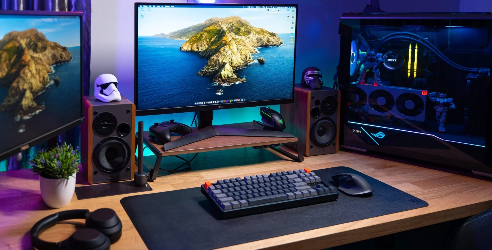

Clasificación geográfica
PAN
Redes de área personal. Conecta dispositivos en un rango de 10 metros.
Ejemplo: Audífonos inalámbricos
LAN
Redes locales. Alcance hasta 1 km en edificios o campus.
Ejemplo: Wi-Fi doméstico
MAN
Redes metropolitanas. Cubren ciudades hasta 50 km.
Ejemplo: Fibra óptica municipal
WAN
Redes de área amplia. Conectan países y continentes.
Ejemplo: La red global Internet
Comparativa de alcance teórico (Escala logarítmica)
Componentes esenciales

Dispositivos finales
Conocidos como Hosts. Son las terminales con las que interactúa el usuario directamente.
Dispositivos intermedios
Garantizan la conectividad y el flujo de datos entre los hosts de manera inteligente.
Medios de red
El canal por el cual viaja la señal. Define la velocidad y la distancia de transmisión.
Topologías de red

Bus (Backbone)
Económica pero vulnerable: si el cable central falla, toda la red se pierde.

Estrella (HUB)
Centralizada: fácil de expandir y tolerante a fallas de nodos individuales.

Anillo (Circular)
Evita colisiones de tráfico, pero un nodo caído rompe la comunicación.

Malla (Redundante)
Máxima resiliencia: nodos interconectados para evitar puntos de falla únicos.
Protocolos: TCP vs. UDP
Comparativa entre integridad de datos y velocidad de transmisión.
TCP (Transmisión controlada)
- • Confirmación de llegada (ACK)
- • Reenvío de paquetes perdidos
- • Ordenamiento garantizado
UDP (Datagrama de usuario)
- • Sin confirmación (más rápido)
- • Baja latencia (tiempo real)
- • Ideal para Streaming y Juegos